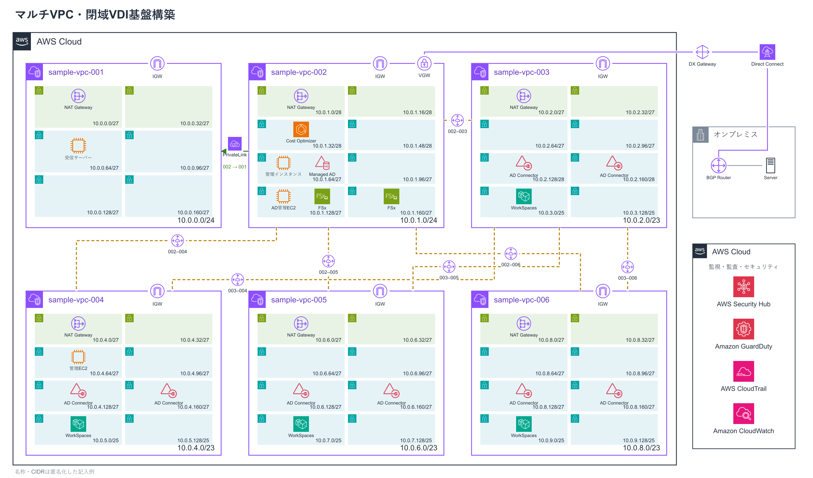
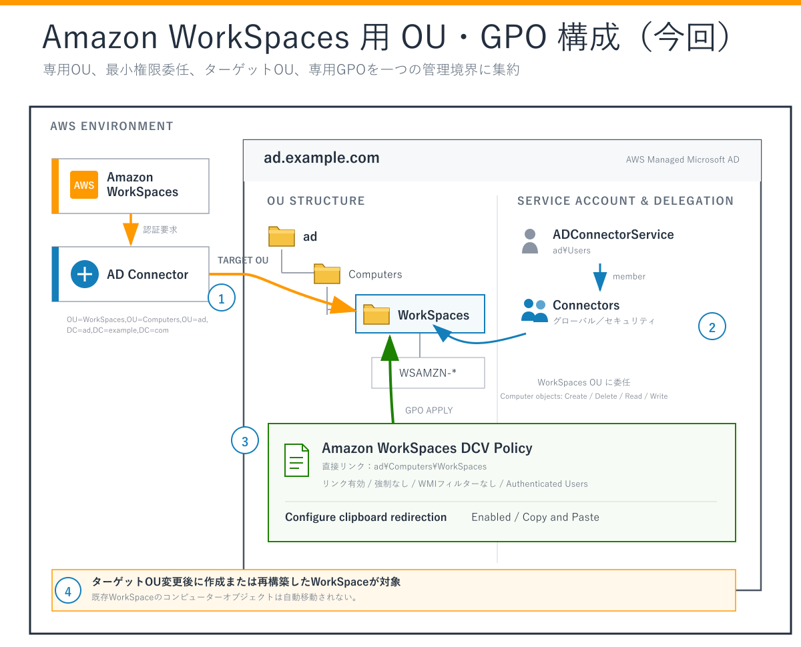
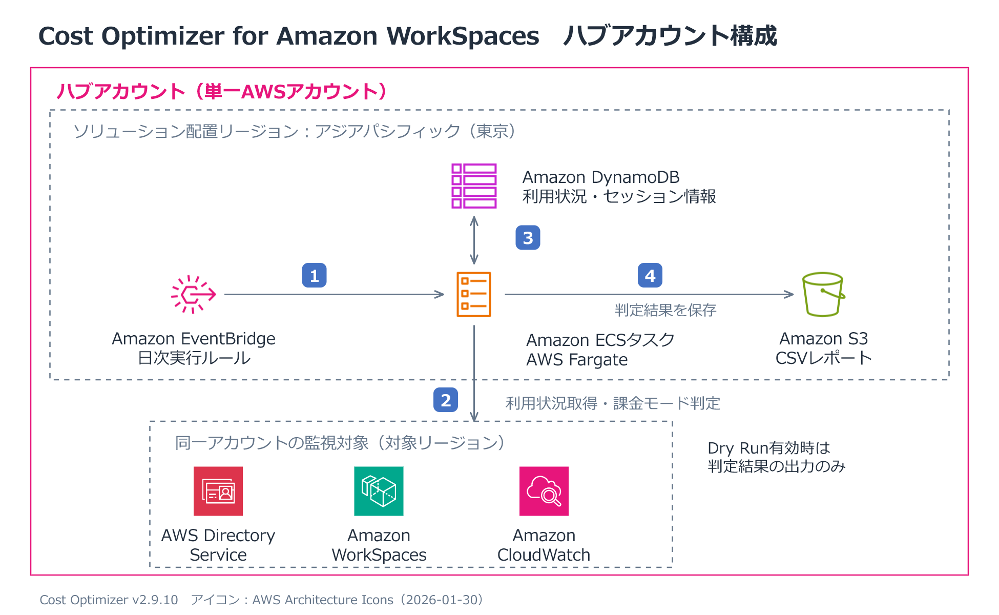
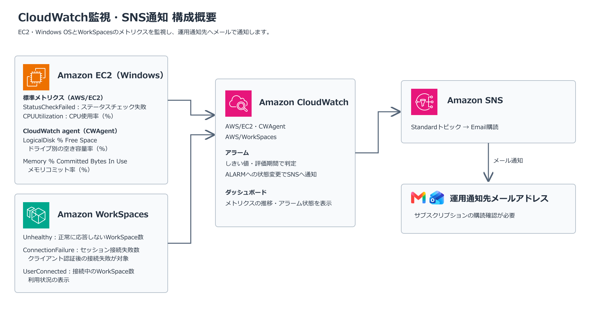

VPC・閉域経路
CIDR、サブネット、ルートテーブル、Direct Connect・VGW、Service Quotasを確認。
確認：CIDR重複、往復経路、閉域疎通、NAT・EIPの必要数マルチVPC・閉域VDI基盤案件
既存のWindows Server上で提供していたデスクトップ環境について、Office製品のサポート期限を見据え、後継候補としてAmazon WorkSpaces Personalを検証・構築しました。このページでは、6 VPCの役割分担、認証・共有基盤、構築の依存関係、利用開始後の運用までをまとめます。
従来はWindows Server上でOfficeを含む業務環境を提供していました。Office製品のサポート期限を見据え、同じ方式を延命するのではなく、利用者単位でデスクトップを払い出し、認証・ポリシー・パッチ・利用状況を継続的に管理できるVDI方式へ移行する方針としました。
要件を機能要件と非機能要件に分け、利用者が必要とする操作だけでなく、可用性、拡張性、セキュリティ、監視、コスト、運用、移行、バックアップの観点から構成を検討しました。
| 要件 | 設計への反映 |
|---|---|
| 利用者がVDIへ接続できる | 利用者単位でAmazon WorkSpaces Personalを払い出し、WorkSpacesクライアントから業務デスクトップへ接続できる構成としました。 |
| ADでユーザー認証できる | 共通基盤にAWS Managed Microsoft ADを配置し、各チームのVPCからAD Connectorを介して同じディレクトリを利用する構成としました。 |
| チーム単位で環境を利用できる | チームごとにWorkSpaces用VPC、AD Connector、OU、GPOを分け、利用者・端末・ポリシーをチーム単位で管理できるようにしました。 |
| FSxの共有フォルダを利用できる | 共通基盤にFSx for Windows File Serverを配置し、AD認証を利用してWorkSpacesから共有フォルダへ接続する構成としました。 |
| 業務に必要なサービスへ接続できる | 認証・DNS・ファイル共有はVPC Peering、VPC 001の受信サーバーはPrivateLinkを利用し、用途ごとに必要な通信経路だけを構成しました。 |
| 監視結果をメール通知できる | Amazon CloudWatchでEC2とWorkSpacesを監視し、しきい値超過や状態変化をAmazon SNSから運用担当者へ通知する構成としました。 |
| 観点 | 要件 | 設計への反映 |
|---|---|---|
| 可用性・性能 | 認証経路を単一AZへ依存させず、利用者が安定して接続できること | Directory ServiceとAD Connectorには異なるAZのサブネットを指定し、認証、名前解決、FSx接続の疎通を確認しました。 |
| 拡張性 | チームや利用者の追加に対応できること | チームごとにVPCとAD Connectorを分離し、WorkSpaces用サブネットには将来の利用者増加を考慮したIPアドレス数を確保しました。構築前にService Quotasを確認し、必要な2項目の上限緩和を申請しました。 |
| セキュリティ | チーム間の影響を分離し、必要な通信だけを許可すること | 全VPCをフルメッシュ接続せず、認証・DNS・ファイル共有に必要なVPC間だけVPC Peeringを設定しました。受信サーバーはPrivateLinkでサービス単位に公開しました。 |
| 監視・ログ | 障害やセキュリティ上の変化を検知し、調査できること | CloudWatch・SNSによる監視通知に加え、Security Hub・GuardDutyの検出内容とNetwork Firewallの通信ログを確認できる運用としました。 |
| コスト | 利用状況に応じてWorkSpacesの課金を最適化できること | Cost Optimizer for Amazon WorkSpacesを導入し、利用時間を基に時間課金と月額課金を判定できるようにしました。 |
| 運用性・保守性 | パッチ適用、設定変更、問い合わせ対応を継続できること | Systems Manager、Patch Manager、Maintenance Windowsを利用し、実行結果を確認できる運用を整備しました。設定書、構成図、パラメータシート、手順書も更新しました。 |
| 移行性 | 既存環境から段階的にVDIへ移行できること | 認証・共有基盤を先に構築し、チームごとにOU・GPO、カスタムイメージ、バンドルを準備して、接続試験後に利用者へ展開する順序としました。 |
| バックアップ・復旧 | 認証・共有データとVDI環境を復旧できること | Directory ServiceとFSxのバックアップ方針を確認し、WorkSpacesはカスタムイメージ、バンドル、設定資料から再展開できるように整理しました。 |
複数チームが利用するため、チームごとにWorkSpaces用VPCを分離し、認証とファイル共有は共通基盤へ集約しました。ネットワーク全体を相互接続するのではなく、業務上必要な通信経路だけをVPC PeeringまたはPrivateLinkで構成しています。
| 区分 | 対象 | 役割 |
|---|---|---|
| 共通基盤 | VPC 002 | Managed Microsoft AD、管理用EC2、FSx、Cost Optimizerを配置 |
| チーム別VDI | VPC 003～006 | チーム単位でAD ConnectorとWorkSpacesを分離して配置 |
| 業務サービス連携 | VPC 001 | 受信サーバーを配置し、必要なサービスだけをPrivateLinkで公開 |
| 閉域接続 | Direct Connect・VGW | AWSとオンプレミス拠点間の閉域経路を提供 |
共有サービス用VPCとチーム別VDI用VPCを分離し、各VPCへ重複しないCIDRを割り当てました。WorkSpacesを配置するVPCには、利用者増加とディレクトリ用サブネットを考慮して、共有サービス用VPCより広いアドレス範囲を確保しています。

VDIを払い出す前に、VPC、閉域経路、名前解決、認証、ファイル共有を順番に整備します。接続確認では到達できることだけでなく、不要なVPCやポートへ到達しないことも確認します。
CIDR、サブネット、ルートテーブル、Direct Connect・VGW、Service Quotasを確認。
確認：CIDR重複、往復経路、閉域疎通、NAT・EIPの必要数共通VPCの異なるAZへディレクトリを配置し、DNSと管理経路を構成。
確認：ディレクトリ状態、DNS IP、管理用EC2からの接続管理用EC2をドメイン参加させ、FSxを認証基盤と連携して共有領域を作成。
確認：AD管理ツール、ドメイン参加、FSxマウント、共有アクセス各チームのVPCから共通のManaged Microsoft ADへ接続するため、VPC Peering、双方向ルート、DNS・認証通信を設定してからAD Connectorを作成します。その後、OU・GPO、イメージ、バンドルを整備して利用者へWorkSpaceを割り当てます。

ad.example.com に統一した模式図です。AD Connector用アカウントを作成し、接続に必要な権限を対象OUへ委任。
確認：アカウント状態、権限範囲、パスワード管理チームVPCと共通VPCを接続し、ルート・SG・DNSを設定してConnectorを作成。
確認：双方向ルート、DNS・Kerberos・LDAP、Directory登録ターゲットOUと専用GPOを関連付け、利用者へWorkSpaceを払い出し。
確認：コンピューター配置、GPO適用、クライアント接続Officeなど業務に必要なソフトウェアと設定を組み込み、Image Checkerで検査。
確認：イメージ作成条件、バンドル利用、共有先での可用性利用開始後は、パッチ適用、課金モード判定、監視通知、セキュリティ検出を継続運用として管理します。変更作業では設定値だけでなく、実行結果と通知到達まで確認し、次回作業へ引き継げる記録を残します。
管理対象ノード、IAMロール、SSM Agent、必要な通信経路を整備。
確認：マネージドノード登録、接続、実行権限対象タグ、パッチベースライン、Maintenance Windowsを設定。
確認：実行履歴、成功・失敗、再実行対象利用時間を基に時間課金と月額課金を判定するソリューションを展開。
確認：Dry Run、S3レポート、課金モード変更条件EC2とWorkSpacesのメトリクス、アラーム、通知先を設定。
確認：アラーム遷移、SNS購読、メール受信Security Hub・GuardDutyの検出を調査し、Network Firewallの追加と通信ルール変更に対応。
確認：検出内容、経路の対称性、許可・拒否ログ、疎通

| 確認レイヤー | 主な確認内容 | 確認結果として残すもの |
|---|---|---|
| ネットワーク | VPC Peering、閉域経路、PrivateLink、往路・復路、名前解決 | ルートテーブル、SG、疎通結果、Flow Logs |
| 認証 | Managed AD、AD Connector、ドメイン参加、OU、GPO | Directory状態、ユーザー認証、GPO適用結果 |
| VDI | WorkSpace払い出し、クライアント接続、イメージ・バンドル | 接続結果、配置先OU、Image Checker結果 |
| ファイル共有 | FSxのDNS解決、マウント、共有・NTFS権限 | 接続結果、読み書き、アクセス制御結果 |
| 運用 | パッチ、監視、通知、コスト判定、セキュリティ検出 | 実行履歴、アラーム通知、レポート、調査記録 |
構築後も、ADの操作・ポリシー、WorkSpacesの接続・更新、パッチ適用、セキュリティ検出に関する問い合わせへ対応しました。環境変更に合わせて設定書、構成図、パラメータシート、運用手順書を更新し、変更内容と確認結果を継続的に共有しています。